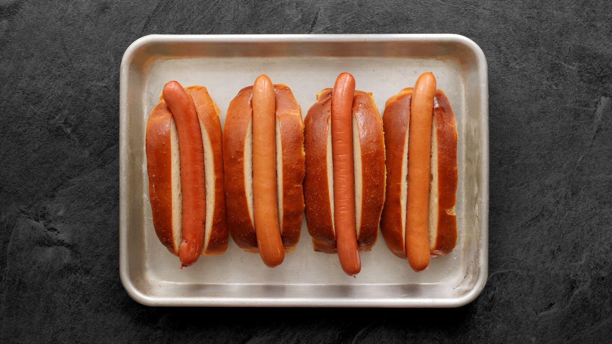
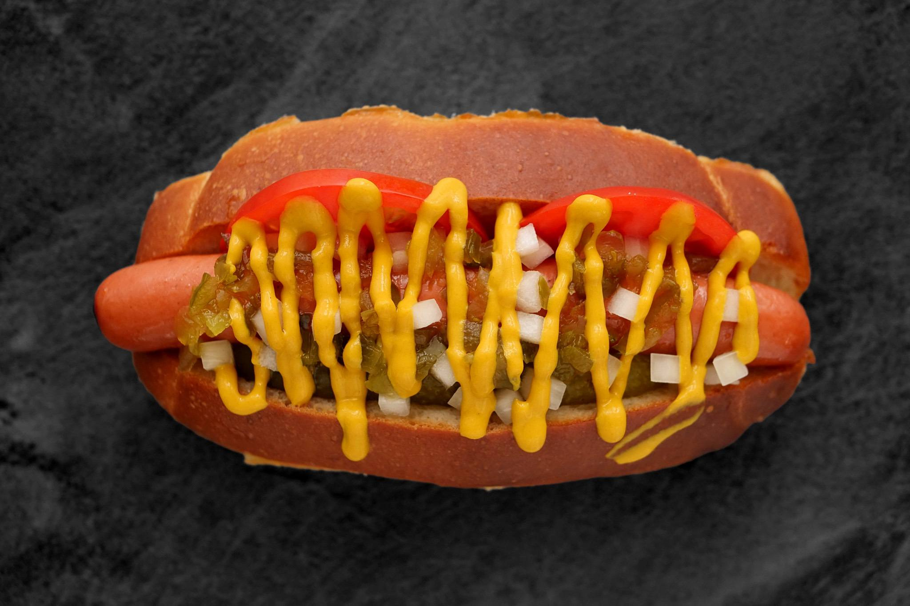

<!DOCTYPE html>
<html lang="cs-cz">

</html>
<html>

<head>
  <meta charset="utf-8" />
  <link rel="stylesheet" href="friends.css" type="text/css" />
  <title>Priprava</title>
</head>
<header>
  <h1>
    F<h10>◉</h10>O<h11>◉</h11>O<h12>◉</h12>D<h10>◉</h10>T<h12>◉</h12>R<h11>◉</h11>C<h10>◉</h10>K<H12>◉</H12>
  </h1>
</header>

<body>
  <div class="grid-container">
    <div class="item2">
      <div class="background">
        <div class="sidenav">
          <h2>Navigace</h2>
          <a href="index.html">Domovská stránka</a>
          <a href="Foodfestival.html">FoodFestival</a>
          <a href="Video.html">Video z FoodFestivalu</a>
          <a href="KdeSeNaChazime.html">Kde se nacházíme</a>
          <a href="Fotogalerie.html">Fotogalerie</a>
          <a href="Priprava.html">Příprava</a>
        </div>
      </div>
    </div>
    <div class="centrovani">
      <div class="item3">
        <h2>Příprava</h2>
        <h2>Žemle a hotdogy</h2>
        <p>Správná žemle na americký hot dog je docela věda. Musí být zároveň vláčná, ale i dostatečně pevná, aby se při kontaktu s tekutinou a horkým párkem okamžitě nerozpadala. </p>
        <iframe width="560" height="315" src="https://www.youtube.com/embed/7H4B1TjWtuw" title="YouTube video player" frameborder="0" allow="accelerometer; autoplay; clipboard-write; encrypted-media; gyroscope; picture-in-picture" allowfullscreen></iframe>
        <p>Těsto je proto jen tak akorát bohaté a s důrazem na krásnou kyprou střídu, která se pomalu trhá. Kromě hot dogů můžete žemle použít na jakékoliv sendviče – studené i teplé. Žemle snese napařování i opékání na másle.</p>
        <h2>Příprava žemlí</h2>
        <p>Žemli můžete samozřejmě použít rovnou jen tak. Výborné jsou ale, když je pořádně opečete na másle. Můžete je udělat jen po stranách, nebo žemli naříznout a na pánvi nebo grilu pěkně rozplácnout.</p>
     
          
          <p>Máslo a opečená střídka dodá extra bohatost, proto pak raději pozor s obložením ať to nepřeženete. Příliš hodně omáček a tuku žemli moc nesvědčí.</p>
          <h2>Klasický hotdog</h2>
          <p>Moje nejoblíbenější kombinace! Je inspirována hot dogy z Chicaga, ale úplně přesné to není. Komplet obložení je pěkně výrazné a kyselé. Dokonalé párování s nasládlou žemlí a párkem.</p>
          
          <p>Po stranách plátky rajčete a podélně ukrojený díl nakládané okurky. Nahoře trocha cibule, okurkový relish a hořčice. Pokud máte tu možnost, zkuste si sehnat americkou hořčici French's a Heinz Sweet Relish.</p>
          <p>Krása v jednoduchosti. Žemle, párek a hromádka kysaného zelí s trochou hořčice. Výrazná a šťavnatá varianta, která k párku sedí naprosto dokonale.</p>
      

      </div>
    </div>
    <div class="background">
      <div class="item4">
        <h2>Otevřeno</h2>
        <p>Po:08:00 - 16:00</p>
        <p>Út:08:00 - 16:00</p>
        <p>Stř:08:00 - 16:00</p>
        <p>Čt:08:00 - 16:00</p>
        <p>Pá:08:00 - 15:00</p>
        <p>So:08:00 - 12:00</p>
      </div>
    </div>
    <div class="item5">Copyright ©StenkoBProduction</div>
  </div>
</body>

</html>